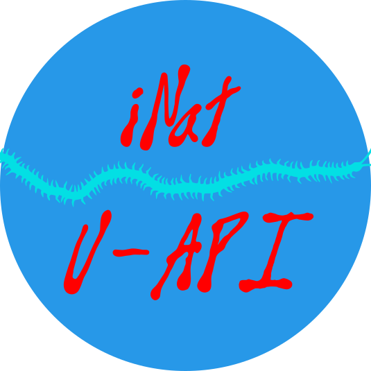

FOR TOO LONG, USING APIS HAS BEEN RESERVED TO THE ELITE.
WE SAY NO MORE.
The iNaturalist, User Friendly API interface, proposes a python module to access to specific observations from the platform iNaturalist, and making it a processable DataFrame, that you can download in a file.

The app has been created by A. PRÉTAT, researcher in ecology at the Sorbonne University of Paris. You can contact her at azidothymidine@proton.me, or on her GitHub profile : aexprtbio.github.io